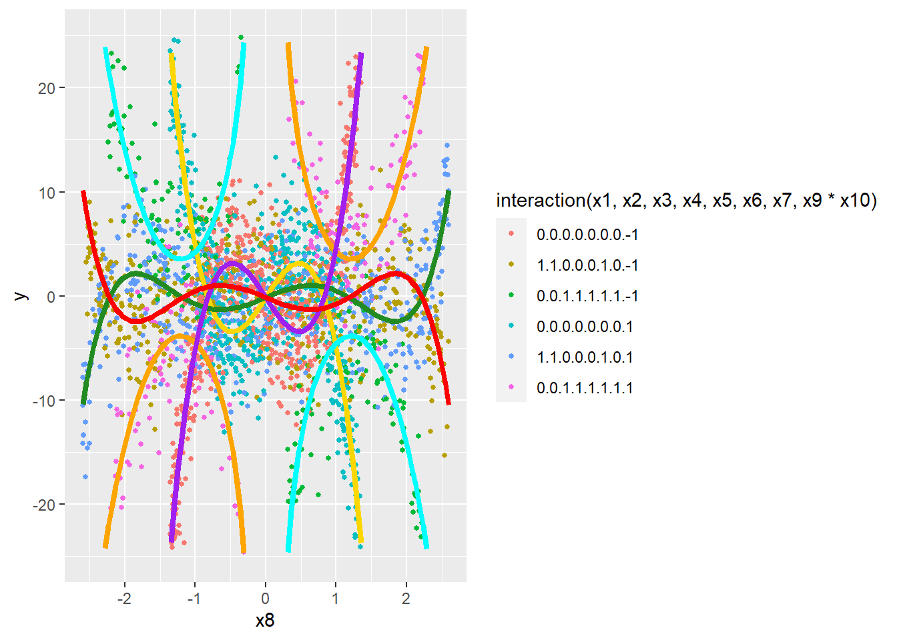
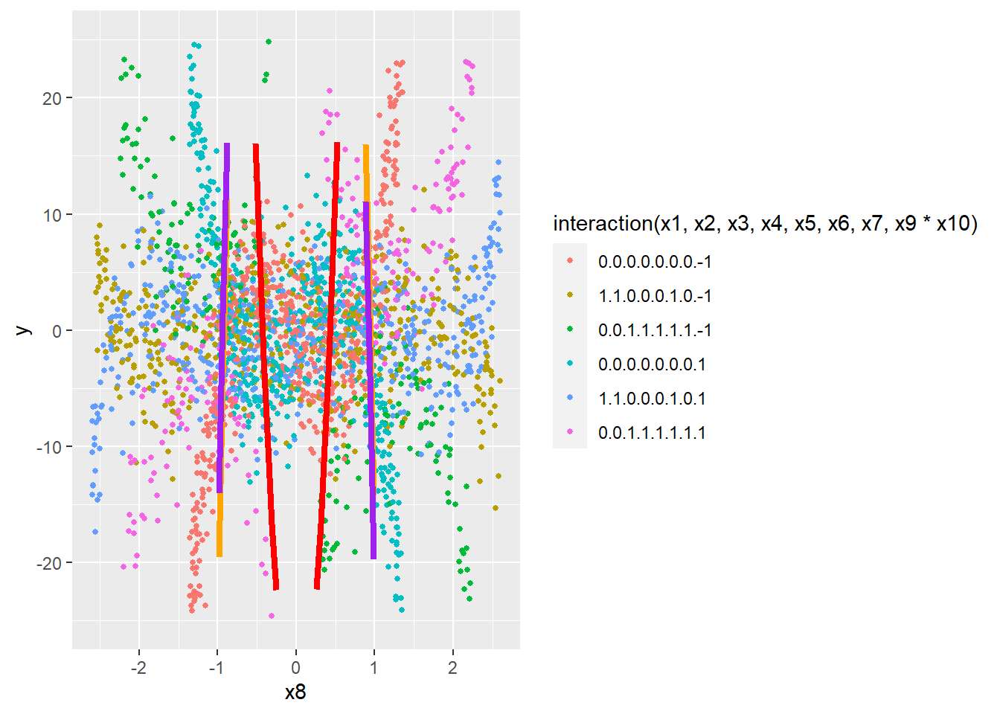
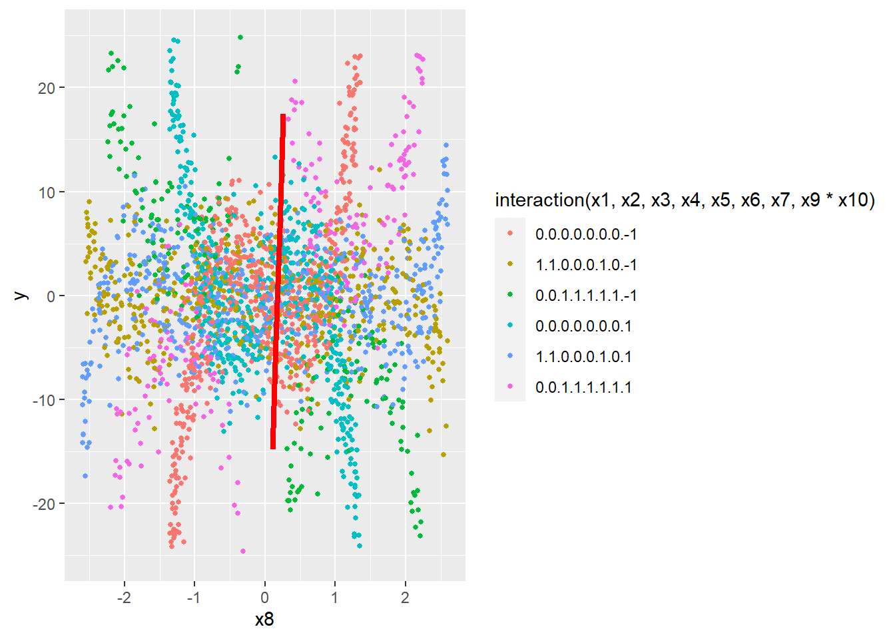
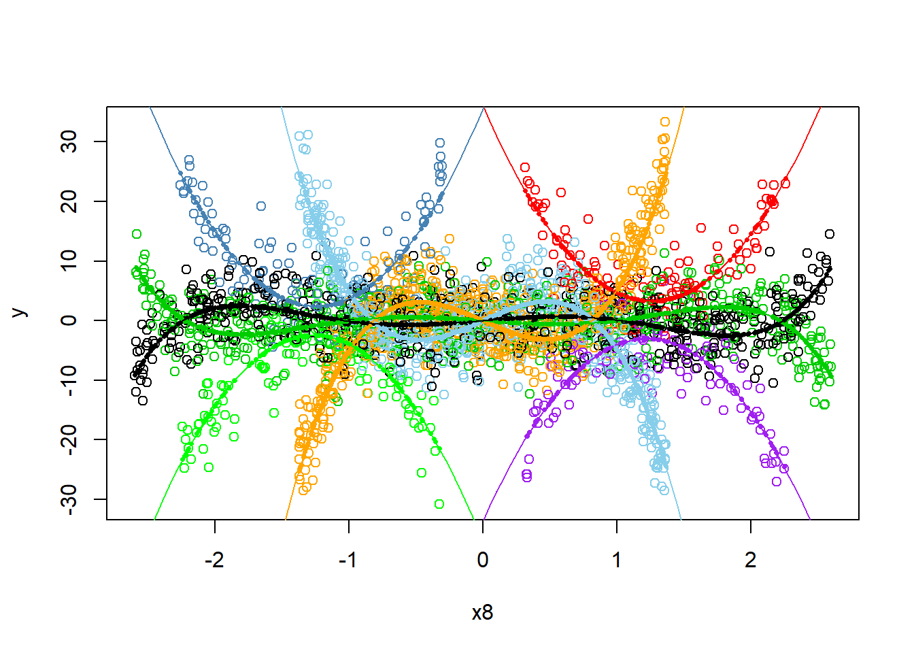

Regression Battleship - Creating your Data
Desmos
True Model:

Code
Use the R-chunks below to create your simulated sample of data from your true regression model.
Code
set.seed(120)
n <- 100000
# Actual X values
# for set 1 ----->
x8 <- runif(n,-2.6, 2.6)
# Positive 1 or Negative 1 - With x5 make second line
x9 <- sample(c(-1,1),n,replace=TRUE)
# Either positive 1 or - 1 - depending on -1 interaction
x10 <- sample(c(-1,1),n,replace=TRUE)
# 2 term model is base model.
# y3/4 term 1 β3: .25 x * x1 Modifier
x1 <- sample(c(0,1),n,prob=c(.6667, .3333),replace = TRUE)
# y3/4 term 2 β4 : .1666666666 x^3 * x2 Modifier
x2 <- sample(c(0,1),n,prob=c(.6667, .3333),replace = TRUE)
# y5/6 term1 β5: 8 x^-1 * x3 INSERT
x3 <- sample(c(0,1),n,prob=c(.6667, .3333),replace = TRUE)
# y5/6 term 2 β6: .6 x * x4 Modifier
x4 <- sample(c(0,1),n,prob=c(.6667,.3333),replace = TRUE)
# y5/6 term 3 β7: .13333333333 x^3 * x5
x5 <- sample(c(0,1),n,prob=c(.6667,.3333),replace = TRUE)
# These two together give us our x^5 term.
# Case x6 == 1, x7 == 0
# y3/4 term 4 β8: .4 x^5 * x6
x6 <- sample(c(0,1),n,prob=c(.3333,.6667),replace = TRUE)
# Case x6 == 1, x7 == 1
# y3/4 term 4 β9: .2 x^5 * x7
x7 <- sample(c(0,1),n,prob=c(.5,.5),replace = TRUE)
# Include Cases
# x1 - 7 == 0 (Base Model)
# x1,x2,x6, == 1, x5, x7 == 0 (Line 1)
# x3,x4,x5,x6,x7 = 1, x1, x2 = 0 (Line 2)
# Then, create betas, sigma, normal error terms and y
sigma <- 4 #change to whatever positive number you want
################################
# You ARE NOT ALLOWED to change this part:
epsilon_i <- rnorm(n, 0, sigma)
################################
# An example of how to make Y...
# y <- beta0 + beta1*X1 + beta2*X2 + beta3*X4*X2 + epsilon_i
εi <- epsilon_i
# Betas
βint <- NA # Not using this
# Line pair 1
β1 <- 10 # x
β2 <- -15 # x^3
# Line pair 2
β3 <- -7.5 # x
β4 <- 12.5 # x^3
β8 <- .4 # x^5
# Line pair 3
β5 <- 8 # x^-1
β6 <- -16 # x
β7 <- 17 #x^3
β8 <- .4 # x^5
β9 <- -.2 # x^5
# For reference
# y1 <- -10 * x -15 * x ^ 3 + εi
# y2 <- +10 * x + 15 * x ^ 3 + εi
# y3 <- -2.5 * x + 2.5 * x ^ 3 -.4* x ^ 5 + εi
# y4 <- +2.5 * x - 2.5 * x ^ 3 + .4* x ^ 5 + εi
# y5 = 8 * x ^ -1 - 6 * x + 2 * x ^ 3 + .2 * x ^ 5 + εi
# y6 = -8 * x ^ -1 + 6 * x - 2 * x ^ 3 - .2 * x ^ 5 + εi
# β3: x1 ----> -.25 x * x1 Modifier
# β4: x2 ----> .1666666666 x^3 * x2 Modifier
# β5: x3 ----> 8 x^-1 * x3 Addition
# β6: x4 ----> -.6 x * x4 Modifier
# β7: x5 ----> .13333333333 x^3 * x5 Modifier
# β8: x6 ----> .4 x^5 * x6 (Case x6 == 1, x7 == 0) Add
# β9: x7 ----> .2 x^5 * x7 (Case x6 == 1, x7 == 1)
# Very Important
x <- x8
y <- (
(x9 * x10 * (
# x^-1 x x^3 x^5
β1 * x + β2 * x^3 +
β3 * x * x1 + β4 * x^3 * x2 + β8 * x^5 * x6 +
β5 * x^-1 * x3 + β6 * x * x4 + β7 * x^3 * x5 + β9 * x^5 * x6 * x7
)) + εi
)
# This loads your data into a data set:
data <- data.frame(y, x1, x2, x3, x4, x5, x6, x7, x8, x9, x10)
############### Model Engineering ###############
# Line 1 Bounds - Limit X values for specific cases
lb1.1 <- -1.3716
lb1.2 <- 1.3716
lb2.1 <- -2.8572
lb2.2 <- 2.8572
lb3.1 <- -2.2628
lb3.2 <- -.2992
lb3.3 <- .2992
lb3.4 <- 2.2628
# β3: x1 ----> .25 x * x1 Modifier
# β4: x2 ----> .1666666666 x^3 * x2 Modifier
# β5: x3 ----> 8 x^-1 * x3 INSERT
# β6: x4 ----> .6 x * x4 Modifier
# β7: x5 ----> .13333333333 x^3 * x5
# β8: x6 ----> .4 x^5 * x6 (Case x6 == 1, x7 == 0)
# β9: x7 ----> .2 x^5 * x7 (Case x6 == 1, x7 == 1)
# Include Cases
# x1 - 7 == 0 (Base Model)
# x1,x2,x6, == 1, x5, x7 == 0 (Line 1)
# x3,x4,x5,x6,x7 = 1, x1, x2 = 0 (Line 2)
# Limit Permutation Possibilities
condition1 <- data$x1 == 0 & data$x2 == 0 & data$x3 == 0 & data$x4 == 0 & data$x5 == 0 & data$x6 == 0 & data$x7 == 0
condition2 <- data$x1 == 1 & data$x2 == 1 & data$x3 == 0 & data$x4 == 0 & data$x5 == 0 & data$x6 == 1 & data$x7 == 0
condition3 <- data$x1 == 0 & data$x2 == 0 & data$x3 == 1 & data$x4 == 1 & data$x5 == 1 & data$x6 == 1 & data$x7 == 1
# Limit X values for specific cases
condition4 <- condition1 & ((data$x8 >= lb1.1) & (data$x8 <= lb1.2))
condition5 <- condition2 & ((data$x8 >= lb2.1) & (data$x8 <= lb2.2))
condition6 <- condition3 & (((data$x8 >= lb3.1) & (data$x8 <= lb3.2)) | ((data$x8 >= lb3.3) & (data$x8 <= lb3.4)))
# condition4 <- FALSE
# condition5 <- FALSE
# condition6 <- FALSE
# Combine all conditions
include_all <- condition4 | condition5 | condition6
# Filter rows from the model matrix
rbdata <- data[include_all, ]
############### END ENGINEERING ###############Code
Call:
lm(formula = y ~ x9:x10:(x8 + I(x8^3) + x8:x1 + I(x8^3):x2 +
I(x8^5):x6 + I(x8^-1):x3 + x8:x4 + I(x8^3):x5 + I(x8^5):x6:x7),
data = rbdata)
Residuals:
Min 1Q Median 3Q Max
-11.9725 -2.6866 0.0741 2.6212 13.1253
Coefficients:
Estimate Std. Error t value Pr(>|t|)
(Intercept) -0.13829 0.07730 -1.789 0.07373 .
x9:x10:x8 10.37749 0.36799 28.200 < 2e-16 ***
x9:x10:I(x8^3) -15.22979 0.29849 -51.023 < 2e-16 ***
x9:x10:x8:x1 -7.58667 0.51089 -14.850 < 2e-16 ***
x9:x10:I(x8^3):x2 12.66249 0.36295 34.888 < 2e-16 ***
x9:x10:I(x8^5):x6 0.40609 0.02659 15.270 < 2e-16 ***
x9:x10:I(x8^-1):x3 8.24810 0.31546 26.146 < 2e-16 ***
x9:x10:x8:x4 -16.90803 1.09970 -15.375 < 2e-16 ***
x9:x10:I(x8^3):x5 17.81804 0.70455 25.290 < 2e-16 ***
x9:x10:I(x8^5):x6:x7 -0.33408 0.10198 -3.276 0.00107 **
---
Signif. codes: 0 '***' 0.001 '**' 0.01 '*' 0.05 '.' 0.1 ' ' 1
Residual standard error: 3.926 on 2590 degrees of freedom
Multiple R-squared: 0.7717, Adjusted R-squared: 0.7709
F-statistic: 972.8 on 9 and 2590 DF, p-value: < 2.2e-16R Plot
Provide a 2D scatterplot that shows both your true model (dashed lines) and estimated model (solid lines) on the same scatterplot. This should match your Desmos graph.
Code
# Reference
test.lm <- lm(y ~ x9:x10:(
x8 + I(x8^3) + x8:x1 + I(x8^3):x2 + I(x8^5):x6 + I(x8^-1):x3 + x8:x4 + I(x8^3):x5 + I(x8^5):x6:x7),data=rbdata)
y1 <- function(x){ 10 * x + 15 * x ^ 3}
y2 <- function(x){-10 * x - 15 * x ^ 3}
y3 <- function(x){-2.5 * x + 2.5 * x ^ 3 - 0.4 * x ^ 5}
y4 <- function(x){2.5 * x - 2.5 * x ^ 3 + 0.4 * x ^ 5}
y5 <- function(x){8 * (x ^-1) - 6 * x + 2 * x ^ 3 + 2 * x ^ 5}
y6 <- function(x){-8 * (x ^ -1) + 6 * x - 2 * x ^ 3 - 2 * x ^ 5}
b <- coef(test.lm)
y7 <- function(x,x9=1,x10=1) {
b[1] +
x9 * x10 * (
b[2] * x + b[3] * x^3)
}
y8 <- function(x,x9=1,x10=1,x1=1,x2=1,x3=0,x4=0,x5=0,x6=1,x7=0) {
b[1] +
x9 * x10 * (
b[2] * x + b[3] * x^3 + b[4] * x * x1 + b[5] * x^3 * x2 + b[6] * x^5 * x6 +
b[7] * x^-1 * x3 + b[8] * x * x4
)
}
y9 <- function(x,x9=1,x10=1,x1=0,x2=0,x3=1,x4=1,x5=1,x6=1,x7=1) {
b[1] +
x9 * x10 * (
b[2] * x + b[3] * x^3 + b[4] * x * x1 + b[5] * x^3 * x2 + b[6] * x^5 * x6 +
b[7] * x^-1 * x3 + b[8] * x * x4 + b[9] * x^3 * x5 + b[10] * x^5 * x6 * x7
)
}
y10 <- function(x,x9=-1,x10=1) {
b[1] +
x9 * x10 * (
b[2] * x + b[3] * x^3
)
}
y11 <- function(x,x9=-1,x10=1,x1=1,x2=1,x3=0,x4=0,x5=0,x6=1,x7=0) {
b[1] +
x9 * x10 * (
b[2] * x + b[3] * x^3 + b[4] * x * x1 + b[5] * x^3 * x2 + b[6] * x^5 * x6 +
b[7] * x^-1 * x3 + b[8] * x * x4
)
}
y12 <- function(x,x9=-1,x10=1,x1=0,x2=0,x3=1,x4=1,x5=1,x6=1,x7=1) {
b[1] +
x9 * x10 * (
b[2] * x + b[3] * x^3 + b[4] * x * x1 + b[5] * x^3 * x2 + b[6] * x^5 * x6 +
b[7] * x^-1 * x3 + b[8] * x * x4 + b[9] * x^3 * x5 + b[10] * x^5 * x6 * x7
)
}
ggplot(rbdata,aes(y=y,x=x8,col=interaction(x1,x2,x3,x4,x5,x6,x7,x9*x10))) +
geom_point(size=1)+
scale_y_continuous(lim=c(-25,+25)) +
stat_function(fun=y7, col = "gold",linewidth=1.5) +
stat_function(fun=y8, col = "forestgreen",linewidth=1.5) +
stat_function(fun=y9, col = "orange",linewidth=1.5) +
stat_function(fun=y10, col = "purple",linewidth=1.5) +
stat_function(fun=y11, col = "red",linewidth=1.5) +
stat_function(fun=y12, col = "cyan",linewidth=1.5)
Line pair 1
\[ y = 10x - 15x^3 \]
Line pair 2
\[ y = -7.5x + 12.5x^3 + 0.4x^5 \]
Line pair 3
\[ y = 8x^{-1} - 16x + 17x^3 + 0.4x^5 - 0.2x^5 \]
Math Model
Write out your “true” model in mathematical form. Make sure it matches your code. This could be “painful” if you chose a complicated model.
\[ y = x_9 x_{10} \left( 10x + (-15)x^3 + (-7.5)x x_1 + 12.5x^3 x_2 + 0.4x^5 x_6 + 8x^{-1} x_3 + (-16)x x_4 + 17x^3 x_5 + (-0.2)x^5 x_6 x_7 + \varepsilon_i \right) \] Note - \(x9\) and \(x10\) would be, in the long equation, distributed to each term, but for simplicity they will be left factored out.
Results
Let’s compare the three guesses at the true model (from two peers, and your teacher) to decide who won (i.e., who had the closest guess).
Code
# Different Seed for Rbdata2
set.seed(123)
n <- 100000
# Actual X values
# for set 1 ----->
x8 <- runif(n,-2.6, 2.6)
# Positive 1 or Negative 1 - With x5 make second line
x9 <- sample(c(-1,1),n,replace=TRUE)
# Either positive 1 or - 1 - depending on -1 interaction
x10 <- sample(c(-1,1),n,replace=TRUE)
# 2 term model is base model.
# y3/4 term 1 β3: .25 x * x1 Modifier
x1 <- sample(c(0,1),n,prob=c(.6667, .3333),replace = TRUE)
# y3/4 term 2 β4 : .1666666666 x^3 * x2 Modifier
x2 <- sample(c(0,1),n,prob=c(.6667, .3333),replace = TRUE)
# y5/6 term1 β5: 8 x^-1 * x3 INSERT
x3 <- sample(c(0,1),n,prob=c(.6667, .3333),replace = TRUE)
# y5/6 term 2 β6: .6 x * x4 Modifier
x4 <- sample(c(0,1),n,prob=c(.6667,.3333),replace = TRUE)
# y5/6 term 3 β7: .13333333333 x^3 * x5
x5 <- sample(c(0,1),n,prob=c(.6667,.3333),replace = TRUE)
# These two together give us our x^5 term.
# Case x6 == 1, x7 == 0
# y3/4 term 4 β8: .4 x^5 * x6
x6 <- sample(c(0,1),n,prob=c(.3333,.6667),replace = TRUE)
# Case x6 == 1, x7 == 1
# y3/4 term 4 β9: .2 x^5 * x7
x7 <- sample(c(0,1),n,prob=c(.5,.5),replace = TRUE)
# Include Cases
# x1 - 7 == 0 (Base Model)
# x1,x2,x6, == 1, x5, x7 == 0 (Line 1)
# x3,x4,x5,x6,x7 = 1, x1, x2 = 0 (Line 2)
# Then, create betas, sigma, normal error terms and y
sigma <- 4 #change to whatever positive number you want
################################
# You ARE NOT ALLOWED to change this part:
epsilon_i <- rnorm(n, 0, sigma)
################################
# An example of how to make Y...
# y <- beta0 + beta1*X1 + beta2*X2 + beta3*X4*X2 + epsilon_i
εi <- epsilon_i
# Betas
βint <- NA # Not using this
# Line pair 1
β1 <- 10 # x
β2 <- -15 # x^3
# Line pair 2
β3 <- -7.5 # x
β4 <- 12.5 # x^3
β8 <- .4 # x^5
# Line pair 3
β5 <- 8 # x^-1
β6 <- -16 # x
β7 <- 17 #x^3
β8 <- .4 # x^5
β9 <- -.2 # x^5
# For reference
# y1 <- -10 * x -15 * x ^ 3 + εi
# y2 <- +10 * x + 15 * x ^ 3 + εi
# y3 <- -2.5 * x + 2.5 * x ^ 3 -.4* x ^ 5 + εi
# y4 <- +2.5 * x - 2.5 * x ^ 3 + .4* x ^ 5 + εi
# y5 = 8 * x ^ -1 - 6 * x + 2 * x ^ 3 + .2 * x ^ 5 + εi
# y6 = -8 * x ^ -1 + 6 * x - 2 * x ^ 3 - .2 * x ^ 5 + εi
# β3: x1 ----> -.25 x * x1 Modifier
# β4: x2 ----> .1666666666 x^3 * x2 Modifier
# β5: x3 ----> 8 x^-1 * x3 Addition
# β6: x4 ----> -.6 x * x4 Modifier
# β7: x5 ----> .13333333333 x^3 * x5 Modifier
# β8: x6 ----> .4 x^5 * x6 (Case x6 == 1, x7 == 0) Add
# β9: x7 ----> .2 x^5 * x7 (Case x6 == 1, x7 == 1)
# Very Important
x <- x8
y <- (
x9 * x10 * (
# x^-1 x x^3 x^5
β1 * x + β2 * x^3 +
β3 * x * x1 + β4 * x^3 * x2 + β8 * x^5 * x6 +
β5 * x^-1 * x3 + β6 * x * x4 + β7 * x^3 * x5 + β9 * x^5 * x6 * x7 +
εi
)
)
# This loads your data into a data set:
data <- data.frame(y, x1, x2, x3, x4, x5, x6, x7, x8, x9, x10)
############### Model Engineering ###############
# Line 1 Bounds - Limit X values for specific cases
lb1.1 <- -1.3716
lb1.2 <- 1.3716
lb2.1 <- -2.8572
lb2.2 <- 2.8572
lb3.1 <- -2.2628
lb3.2 <- -.2992
lb3.3 <- .2992
lb3.4 <- 2.2628
# β3: x1 ----> .25 x * x1 Modifier
# β4: x2 ----> .1666666666 x^3 * x2 Modifier
# β5: x3 ----> 8 x^-1 * x3 INSERT
# β6: x4 ----> .6 x * x4 Modifier
# β7: x5 ----> .13333333333 x^3 * x5
# β8: x6 ----> .4 x^5 * x6 (Case x6 == 1, x7 == 0)
# β9: x7 ----> .2 x^5 * x7 (Case x6 == 1, x7 == 1)
# Include Cases
# x1 - 7 == 0 (Base Model)
# x1,x2,x6, == 1, x5, x7 == 0 (Line 1)
# x3,x4,x5,x6,x7 = 1, x1, x2 = 0 (Line 2)
# Limit Permutation Possibilities
condition1 <- data$x1 == 0 & data$x2 == 0 & data$x3 == 0 & data$x4 == 0 & data$x5 == 0 & data$x6 == 0 & data$x7 == 0
condition2 <- data$x1 == 1 & data$x2 == 1 & data$x3 == 0 & data$x4 == 0 & data$x5 == 0 & data$x6 == 1 & data$x7 == 0
condition3 <- data$x1 == 0 & data$x2 == 0 & data$x3 == 1 & data$x4 == 1 & data$x5 == 1 & data$x6 == 1 & data$x7 == 1
# Limit X values for specific cases
condition4 <- condition1 & ((data$x8 >= lb1.1) & (data$x8 <= lb1.2))
condition5 <- condition2 & ((data$x8 >= lb2.1) & (data$x8 <= lb2.2))
condition6 <- condition3 & (((data$x8 >= lb3.1) & (data$x8 <= lb3.2)) | ((data$x8 >= lb3.3) & (data$x8 <= lb3.4)))
# condition4 <- FALSE
# condition5 <- FALSE
# condition6 <- FALSE
# Combine all conditions
include_all <- condition4 | condition5 | condition6
# Filter rows from the model matrix
rbdata2 <- data[include_all, ]Code
ben.lm <- lm(y ~ x9:x10:(
x8 + I(x8^3) + x8:x1 + I(x8^3):x2 + I(x8^5):x6 + I(x8^-1):x3 + x8:x4 + I(x8^3):x5 + I(x8^5):x6:x7),data=rbdata)
benpred <- predict(ben.lm)
zach.lm <- lm(y^2 ~ I(x8^2) + I(x1) + I(x1):I(x8^2) + x7 + x9:x7:x8 + x7:I(x8^2), data = rbdata2)
zachpred <- predict(zach.lm)
sam.lm <- lm(y ~ x8 + I(x8^2) + x4 + x8:x4)
sampred <- predict(sam.lm)
rdat2 <- rbdata2 %>%
mutate(mycolor = case_when(
x2==0 & x3==0 & x9==-1 & x10==-1 ~ "Cubic Down",
x2==0 & x3==0 & x9==1 & x10==1 ~ "Cubic Down",
x2==0 & x3==0 & x9==1 & x10==-1 ~ "Cubic Up",
x2==0 & x3==0 & x9==-1 & x10==1 ~ "Cubic Up",
x2==1 & x3==0 & x9==-1 & x10==-1 ~ "Quintic Up",
x2==1 & x3==0 & x9==1 & x10==1 ~ "Quintic Up",
x2==1 & x3==0 & x9==1 & x10==-1 ~ "Quintic Down",
x2==1 & x3==0 & x9==-1 & x10==1 ~ "Quintic Down",
x2==0 & x3==1 & x9==-1 & x10==-1 & x8>0 ~ "Quadratic Up Right",
x2==0 & x3==1 & x9==1 & x10==1 & x8>0~ "Quadratic Up Right",
x2==0 & x3==1 & x9==1 & x10==-1 & x8<0 ~ "Quadratic Up Left",
x2==0 & x3==1 & x9==-1 & x10==1 & x8<0~ "Quadratic Up Left",
x2==0 & x3==1 & x9==-1 & x10==1 & x8>0~ "Quadratic Down Right",
x2==0 & x3==1 & x9==1 & x10==-1 & x8>0~ "Quadratic Down Right",
x2==0 & x3==1 & x9==-1 & x10==-1 & x8<0~ "Quadratic Down Left",
x2==0 & x3==1 & x9==1 & x10==1 & x8<0~ "Quadratic Down Left",
))
rdat2 <- rdat2 %>%
mutate( x11 = ifelse(mycolor=="Quadratic Down Right", 1, 0),
x12 = ifelse(mycolor=="Quadratic Up Right", 1, 0),
x13 = ifelse(mycolor=="Cubic Down", 1, 0),
x14 = ifelse(mycolor=="Cubic Up", 1, 0),
x15 = ifelse(mycolor=="Quintic Down", 1, 0),
x16 = ifelse(mycolor=="Quintic Up", 1, 0),
x17 = ifelse(mycolor=="Quadratic Down Left", 1, 0),
x18 = ifelse(mycolor=="Quadratic Up Left", 1, 0))
saunders.lm <- lm(y ~ x11 + x11: x8 + x11:I( x8^2) + #Quadratic Down Right
x12 + x12: x8 + x12:I( x8^2) + #Quadratic Up Right
x17 + x17: x8 + x17:I( x8^2) + #Quadratic Down Left
x18 + x18: x8 + x18:I( x8^2) + #Quadratic Up Left
x13: x8 + x13:I( x8^3) + #Cubic Down
x14: x8 + x14:I( x8^3) + #Cubic Up
x15: x8 + x15:I( x8^3) + x15:I( x8^5) + #Quintic Down
x16: x8 + x16:I( x8^3) + x16:I( x8^5) #Quintic Up
, data=rdat2)
saunderspred <- predict(saunders.lm)Zach’s Guess
Call:
lm(formula = y^2 ~ I(x8^2) + I(x1) + I(x1):I(x8^2) + x7 + x9:x7:x8 +
x7:I(x8^2), data = rbdata2)
Residuals:
Min 1Q Median 3Q Max
-219.15 -41.43 -9.55 30.26 857.46
Coefficients:
Estimate Std. Error t value Pr(>|t|)
(Intercept) -35.113 4.463 -7.868 5.15e-15 ***
I(x8^2) 189.807 5.183 36.621 < 2e-16 ***
I(x1) 47.596 6.525 7.294 3.90e-13 ***
x7 123.516 9.074 13.613 < 2e-16 ***
I(x8^2):I(x1) -186.684 5.412 -34.494 < 2e-16 ***
I(x8^2):x7 -160.005 6.138 -26.070 < 2e-16 ***
x7:x9:x8 2.786 3.511 0.793 0.428
---
Signif. codes: 0 '***' 0.001 '**' 0.01 '*' 0.05 '.' 0.1 ' ' 1
Residual standard error: 103.8 on 2757 degrees of freedom
Multiple R-squared: 0.4149, Adjusted R-squared: 0.4136
F-statistic: 325.8 on 6 and 2757 DF, p-value: < 2.2e-16Code
b <- coef(zach.lm)
y1 <- function(x,x9=1,x10=1,x1=0,x2=0,x3=0,x4=0,x5=0,x6=0,x7=0) {
b[1] + b[2] * x^2 + b[3] * x1 + b[4] * x7 + b[5]* x^2 * x1 + b[6] * x^2 * x7 + b[7] * x7*x*x9
}
y2 <- function(x,x9=1,x10=1,x1=0,x2=0,x3=0,x4=0,x5=0,x6=1,x7=0) {
b[1] + b[2] * x^2 + b[3] * x1 + b[4] * x7 + b[5]* x^2 * x1 + b[6] * x^2 * x7 + b[7] * x7*x*x9
}
y3 <- function(x,x9=1,x10=1,x1=1,x2=1,x3=1,x4=1,x5=1,x6=1,x7=1) {
b[1] + b[2] * x^2 + b[3] * x1 + b[4] * x7 + b[5]* x^2 * x1 + b[6] * x^2 * x7 + b[7] * x7*x*x9
}
y4 <- function(x,x9=-1,x10=1,x1=0,x2=0,x3=0,x4=0,x5=0,x6=0,x7=0) {
b[1] + b[2] * x^2 + b[3] * x1 + b[4] * x7 + b[5]* x^2 * x1 + b[6] * x^2 * x7 + b[7] * x7*x*x9
}
y5 <- function(x,x9=-1,x10=1,x1=0,x2=0,x3=0,x4=0,x5=0,x6=1,x7=0) {
b[1] + b[2] * x^2 + b[3] * x1 + b[4] * x7 + b[5]* x^2 * x1 + b[6] * x^2 * x7 + b[7] * x7*x*x9
}
y6 <- function(x,x9=-1,x10=1,x1=1,x2=1,x3=1,x4=1,x5=1,x6=1,x7=1) {
b[1] + b[2] * x^2 + b[3] * x1 + b[4] * x7 + b[5]* x^2 * x1 + b[6] * x^2 * x7 + b[7] * x7*x*x9
}
ggplot(rbdata,aes(y=y,x=x8,col=interaction(x1,x2,x3,x4,x5,x6,x7,x9*x10))) +
geom_point(size=1)+
scale_y_continuous(lim=c(-25,+25)) +
stat_function(fun=y1, col = "gold",linewidth=1.5) +
stat_function(fun=y2, col = "forestgreen",linewidth=1.5) +
stat_function(fun=y3, col = "orange",linewidth=1.5)+
stat_function(fun=y4, col = "blue",linewidth=1.5) +
stat_function(fun=y5, col = "red",linewidth=1.5) +
stat_function(fun=y6, col = "purple",linewidth=1.5)
Sam’s Guess
Call:
lm(formula = y ~ x8 + I(x8^2) + x4 + x8:x4)
Residuals:
Min 1Q Median 3Q Max
-50113 -18 1 19 19637
Coefficients:
Estimate Std. Error t value Pr(>|t|)
(Intercept) -1.1173 1.2352 -0.905 0.366
x8 0.2106 0.6085 0.346 0.729
I(x8^2) 0.2011 0.3701 0.543 0.587
x4 1.1513 1.5803 0.729 0.466
x8:x4 -0.1558 1.0537 -0.148 0.882
Residual standard error: 235.6 on 99995 degrees of freedom
Multiple R-squared: 9.504e-06, Adjusted R-squared: -3.05e-05
F-statistic: 0.2376 on 4 and 99995 DF, p-value: 0.9172Code
y1 <- function(x,x9=1,x10=1,x1=0,x2=0,x3=0,x4=0,x5=0,x6=0,x7=0) {
b[1] + b[2] * x + b[3] * x^2 + b[4] * x4 + b[5] * x * x4
}
y2 <- function(x,x9=1,x10=1,x1=0,x2=0,x3=0,x4=0,x5=0,x6=1,x7=0) {
b[1] + b[2] * x + b[3] * x^2 + b[4] * x4 + b[5] * x * x4
}
y3 <- function(x,x9=1,x10=1,x1=1,x2=1,x3=1,x4=1,x5=1,x6=1,x7=1) {
b[1] + b[2] * x + b[3] * x^2 + b[4] * x4 + b[5] * x * x4
}
y4 <- function(x,x9=-1,x10=1,x1=0,x2=0,x3=0,x4=0,x5=0,x6=0,x7=0) {
b[1] + b[2] * x + b[3] * x^2 + b[4] * x4 + b[5] * x * x4
}
y5 <- function(x,x9=-1,x10=1,x1=0,x2=0,x3=0,x4=0,x5=0,x6=1,x7=0) {
b[1] + b[2] * x + b[3] * x^2 + b[4] * x4 + b[5] * x * x4
}
y6 <- function(x,x9=-1,x10=1,x1=1,x2=1,x3=1,x4=1,x5=1,x6=1,x7=1) {
b[1] + b[2] * x + b[3] * x^2 + b[4] * x4 + b[5] * x * x4
}
ggplot(rbdata,aes(y=y,x=x8,col=interaction(x1,x2,x3,x4,x5,x6,x7,x9*x10))) +
geom_point(size=1)+
scale_y_continuous(lim=c(-25,+25)) +
stat_function(fun=y1, col = "gold",linewidth=1.5) +
stat_function(fun=y2, col = "forestgreen",linewidth=1.5) +
stat_function(fun=y3, col = "orange",linewidth=1.5)+
stat_function(fun=y4, col = "blue",linewidth=1.5) +
stat_function(fun=y5, col = "red",linewidth=1.5) +
stat_function(fun=y6, col = "purple",linewidth=1.5)
Saunder’s Guess
Call:
lm(formula = y ~ x11 + x11:x8 + x11:I(x8^2) + x12 + x12:x8 +
x12:I(x8^2) + x17 + x17:x8 + x17:I(x8^2) + x18 + x18:x8 +
x18:I(x8^2) + x13:x8 + x13:I(x8^3) + x14:x8 + x14:I(x8^3) +
x15:x8 + x15:I(x8^3) + x15:I(x8^5) + x16:x8 + x16:I(x8^3) +
x16:I(x8^5), data = rdat2)
Residuals:
Min 1Q Median 3Q Max
-13.6163 -2.6215 -0.0784 2.6765 14.1680
Coefficients:
Estimate Std. Error t value Pr(>|t|)
(Intercept) 0.01210 0.08346 0.145 0.884728
x11 -33.67801 1.95746 -17.205 < 2e-16 ***
x12 36.10561 1.99828 18.068 < 2e-16 ***
x17 -36.95060 2.08016 -17.763 < 2e-16 ***
x18 35.50228 1.69884 20.898 < 2e-16 ***
x11:x8 50.11926 3.46566 14.462 < 2e-16 ***
x11:I(x8^2) -20.48120 1.33617 -15.328 < 2e-16 ***
x8:x12 -52.02145 3.45963 -15.037 < 2e-16 ***
I(x8^2):x12 20.61086 1.33478 15.441 < 2e-16 ***
x8:x17 -54.74426 3.50345 -15.626 < 2e-16 ***
I(x8^2):x17 -21.71147 1.31502 -16.510 < 2e-16 ***
x8:x18 53.39005 3.08055 17.331 < 2e-16 ***
I(x8^2):x18 21.53149 1.19970 17.947 < 2e-16 ***
x8:x13 10.17250 0.53536 19.001 < 2e-16 ***
x13:I(x8^3) -15.01533 0.42305 -35.493 < 2e-16 ***
x8:x14 -9.96537 0.51132 -19.490 < 2e-16 ***
I(x8^3):x14 15.05612 0.40753 36.945 < 2e-16 ***
x8:x15 -1.63311 0.49188 -3.320 0.000911 ***
I(x8^3):x15 1.99579 0.28768 6.938 4.96e-12 ***
x15:I(x8^5) -0.33826 0.03720 -9.094 < 2e-16 ***
x8:x16 1.87970 0.49905 3.767 0.000169 ***
I(x8^3):x16 -2.15789 0.28588 -7.548 5.97e-14 ***
I(x8^5):x16 0.35564 0.03698 9.617 < 2e-16 ***
---
Signif. codes: 0 '***' 0.001 '**' 0.01 '*' 0.05 '.' 0.1 ' ' 1
Residual standard error: 4.001 on 2741 degrees of freedom
Multiple R-squared: 0.7718, Adjusted R-squared: 0.7699
F-statistic: 421.3 on 22 and 2741 DF, p-value: < 2.2e-16Code
palette(c("skyblue","orange","green","purple","steelblue","red","green3","black"))
plot(y ~ x8, data=rdat2, col=as.factor(mycolor))
points(saunders.lm$fit ~ x8, data=rdat2, col=as.factor(mycolor), pch=16, cex=0.5)
b <- coef(saunders.lm)
drawit <- function( x11=0, x12=0, x13=0, x14=0, x15=0, x16=0, x17=0, x18=0, i=1){
curve(b[1] + b[2]* x11 + b[3]* x12 + b[4]* x17 + b[5]* x18 + b[6]* x11* x8 + b[7]* x11* x8^2 + b[8]* x8* x12 + b[9]* x8^2* x12 + b[10]* x8* x17 + b[11]* x8^2* x17 + b[12]* x8* x18 + b[13]* x8^2* x18 + b[14]* x8* x13 + b[15]* x13* x8^3 + b[16]* x8* x14 + b[17]* x8^3* x14 + b[18]* x8* x15 + b[19]* x8^3* x15 + b[20]* x15* x8^5 + b[21]* x8* x16 + b[22]* x8^3* x16 + b[23]* x8^5* x16, add=TRUE, xname="x8", col=palette()[i])
}
drawit(1,0,0,0,0,0,0,0,4)
drawit(0,1,0,0,0,0,0,0,6)
drawit(0,0,1,0,0,0,0,0,1)
drawit(0,0,0,1,0,0,0,0,2)
drawit(0,0,0,0,1,0,0,0,7)
drawit(0,0,0,0,0,1,0,0,8)
drawit(0,0,0,0,0,0,1,0,3)
drawit(0,0,0,0,0,0,0,1,5)
Predictions
Min. 1st Qu. Median Mean 3rd Qu. Max.
-25.36777 -2.43046 -0.21753 -0.04239 2.15116 24.52278 Min. 1st Qu. Median Mean 3rd Qu. Max.
-1.1725 -0.9810 -0.4105 -0.2819 0.2695 1.5353 Min. 1st Qu. Median Mean 3rd Qu. Max.
-25.161104 -2.297426 0.006556 -0.042738 2.312966 24.790983 Code
# Compute R-squared for each validation
# Get y-hat for each model on new data.
ben.yh <- predict(test.lm, newdata=rbdata2)
zach.yh <- predict(zach.lm, newdata=rbdata2)
sam.yh <- predict(sam.lm, newdata=rbdata2)
saunders.yh <- predict(saunders.lm, newdata=rdat2) # Fixed variable name
# Compute y-bar
ybar <- mean(rbdata2$y) # Yi is given by Ynew from the new sample of data
# Compute SSTO
SSTO <- sum((rbdata2$y - ybar)^2)
# Compute SSE for each model using y - yhat
ben.SSE <- sum((rbdata2$y - ben.yh)^2)
zach.SSE <- sum((rbdata2$y - zach.yh)^2)
sam.SSE <- sum((rbdata2$y - sam.yh)^2)
saunders.SSE <- sum((rbdata2$y - saunders.yh)^2) # Fixed SSE calculation
# Compute R-squared for each
ben.rs <- 1 - ben.SSE / SSTO
zach.rs <- 1 - zach.SSE / SSTO
sam.rs <- 1 - sam.SSE / SSTO
saunders.rs <- 1 - saunders.SSE / SSTO
# Compute adjusted R-squared for each
n <- length(rbdata2$y) # Sample size corrected to rbdata2
ben.p <- length(coef(test.lm)) # Number of parameters in model
zach.p <- length(coef(zach.lm)) # Number of parameters in model
sam.p <- length(coef(sam.lm)) # Number of parameters in model
saunders.p <- length(coef(saunders.lm)) # Number of parameters in model
ben.rsa <- 1 - (n-1)/(n-ben.p)*ben.SSE / SSTO
zach.rsa <- 1 - (n-1)/(n-zach.p)*zach.SSE / SSTO
sam.rsa <- 1 - (n-1)/(n-sam.p)*sam.SSE / SSTO
saunders.rsa <- 1 - (n-1)/(n-saunders.p)*saunders.SSE / SSTO
my_output_table2 <- data.frame(
Model = c("Ben", "Zach", "Sam", "Saunders"),
`Original R2` = c(summary(test.lm)$r.squared, summary(zach.lm)$r.squared, summary(sam.lm)$r.squared, summary(saunders.lm)$r.squared),
`Orig. Adj. R-squared` = c(summary(test.lm)$adj.r.squared, summary(zach.lm)$adj.r.squared, summary(sam.lm)$adj.r.squared, summary(saunders.lm)$adj.r.squared),
`Validation R-squared` = c(ben.rs, zach.rs, sam.rs, saunders.rs),
`Validation Adj. R^2` = c(ben.rsa, zach.rsa, sam.rsa, saunders.rsa)
)
colnames(my_output_table2) <- c("Model", "Original $R^2$", "Original Adj. $R^2$", "Validation $R^2$", "Validation Adj. $R^2$")
knitr::kable(my_output_table2, escape=TRUE, digits=4)| Model | Original \(R^2\) | Original Adj. \(R^2\) | Validation \(R^2\) | Validation Adj. \(R^2\) |
|---|---|---|---|---|
| Ben | 0.7717 | 0.7709 | 0.7718 | 0.7711 |
| Zach | 0.4149 | 0.4136 | -179.5922 | -179.9852 |
| Sam | 0.0000 | 0.0000 | -0.0112 | -0.0126 |
| Saunders | 0.7718 | 0.7699 | 0.7718 | 0.7699 |
Something is wrong with the validation for Zach and Sam. I am not sure where that problem is arising. The validations should not change that drastically. It likely originates from the fact that Brother Saunder’s data has a lot of mutations, but those shouldn’t effect the validation…
Winner:
Definitely Brother Saunders.